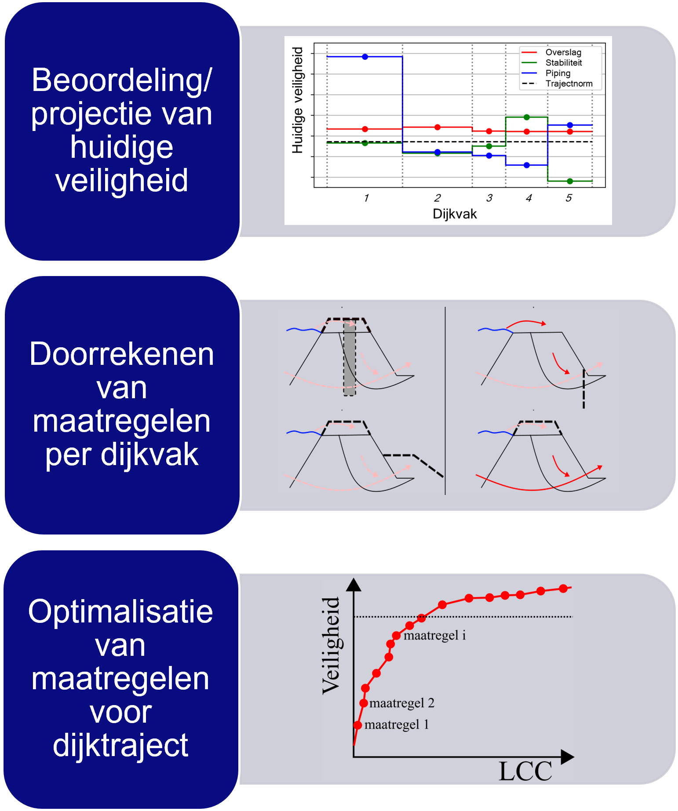

Opzet van een berekening
Bij een berekening met de veiligheidsrendementmethode kijken we voor een periode van 100 jaar vooruit naar de kosten en baten van dijkversterkingsmaatregelen.
Een veiligheidsrendementberekening bestaat uit 3 stappen, die individueel of gezamenlijk kunnen worden aangeroepen.
Beoordeling/projectie van huidige veiligheid
In deze stap wordt voor de hele geanalyseerde periode de faalkans van het dijktraject bepaald, per vak, per mechanisme. Dit komt dus overeen met de beoordeling + een doorkijk gedurende de analyseperiode.
Doorrekenen van maatregelen per dijkvak
Voor elk dijkvak zijn in de invoerdatabase maatregelen gedefinieerd. Voor elk van deze maatregelen worden kosten en faalkans na versterking bepaald voor de gehele analyseperiode.
Optimalisatie van maatregelen voor dijktraject
Als laatste wordt met behulp van een optimalisatiealgoritme bepaald welke combinatie van maatregelen optimaal is voor het dijktraject. Optimaal betekent hierin dat deze resulteert in minimale totale kosten (investering + overstromingsrisico).
Naast de optimalisatie wordt ook een referentie doorgerekend. Daarbij is het uitgangspunt dat alle dijkvakken op basis van de doorsnede-eisen uit OI2014 voor een planperiode van 50 jaar worden versterkt.
